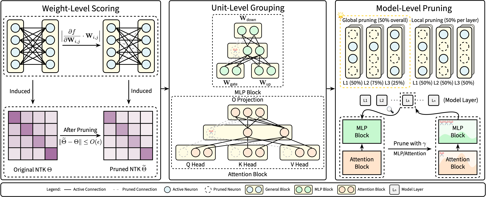
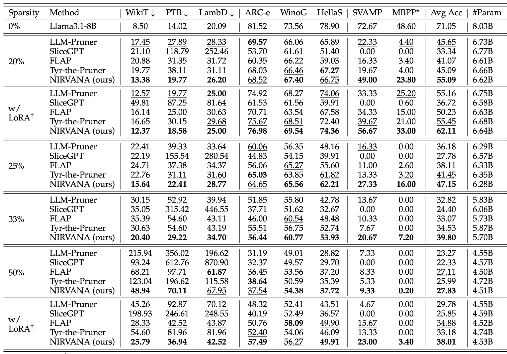
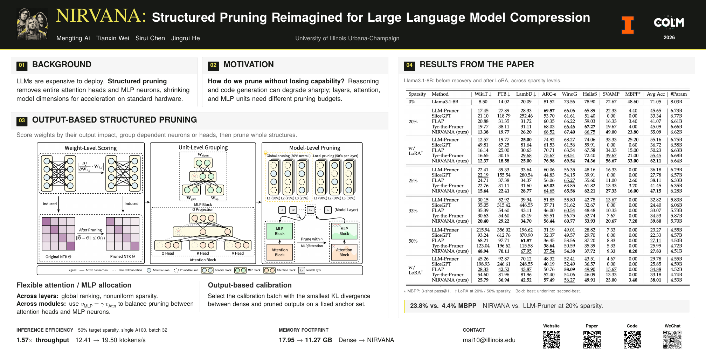

Output-based saliency
Estimate the first-order effect of removing each weight, then aggregate the scores within a structural unit.
University of Illinois Urbana-Champaign
Prune whole structures.
Keep the model’s useful behavior.

2026MBPP pass@1
20% target sparsity, before LoRA.Average accuracy after LoRA
Llama3.1-8B, 20% target sparsity.Inference throughput
50% target sparsity, A100, batch 32.A little love for our namesake
Celebrating the band’s 2026 MTV Video Vanguard Award. Thanks for the music that accompanies me through a long time.
The official announcement ↗01 / The question
LLMs are expensive to deploy. Structured pruning removes entire attention heads and MLP neurons, reducing model dimensions so the savings can translate into practical acceleration.
But compression can damage reasoning and code generation. NIRVANA asks how to remove whole structures while limiting changes to model outputs and retaining the ability to recover through fine-tuning.
A unit’s importance depends on how much removing it changes the model function.
Layers and attention/MLP modules play different roles. Their pruning budgets should reflect those differences.
Calibration data affects saliency estimates. Select it by the behavior of the resulting pruned model.
02 / The method
Score individual weights, group dependent neurons or heads, then allocate pruning across layers and modules.

Estimate the first-order effect of removing each weight, then aggregate the scores within a structural unit.
Use global unit ranking for nonuniform layer sparsity. Balance the pruning rates of MLP neurons and attention heads through γ.
Prune with candidate calibration batches. Choose the batch whose pruned model has the smallest output KL divergence from the dense model on a fixed held-out anchor set.
03 / The evidence
Evaluation on Llama3.1-8B spans language modeling, commonsense reasoning, math, and code generation, before and after LoRA recovery.
Compare NIRVANA with LLM-Pruner.
Llama3.1-8B · 20% sparsity · Before LoRA
| Benchmark | NIRVANA | LLM-Pruner |
|---|---|---|
| MBPP | 23.80 | 4.40 |
| SVAMP | 49.00 | 22.33 |
| Avg. accuracy | 55.09 | 45.65 |
+9.44 points in average accuracy over LLM-Pruner.
MBPP: 3-shot pass@1. Sparsity is the pruning target, not the percentage reduction in total parameters. Full baseline comparisons are in the original table.

Llama3.1-8B · 50% target sparsity
Single A100 · batch size 32
Throughput
12.4119.50
ktokens/s · 1.57× the dense modelMemory
17.9511.27
GB · dense → NIRVANA04 / Take it with you
Read the full method and experiments, explore the implementation, or download the COLM poster.

@misc{ai2025nirvana,
title = {NIRVANA: Structured Pruning Reimagined
for Large Language Model Compression},
author = {Mengting Ai and Tianxin Wei and
Sirui Chen and Jingrui He},
year = {2025},
eprint = {2509.14230},
archivePrefix = {arXiv},
primaryClass = {cs.LG},
url = {https://arxiv.org/abs/2509.14230}
}